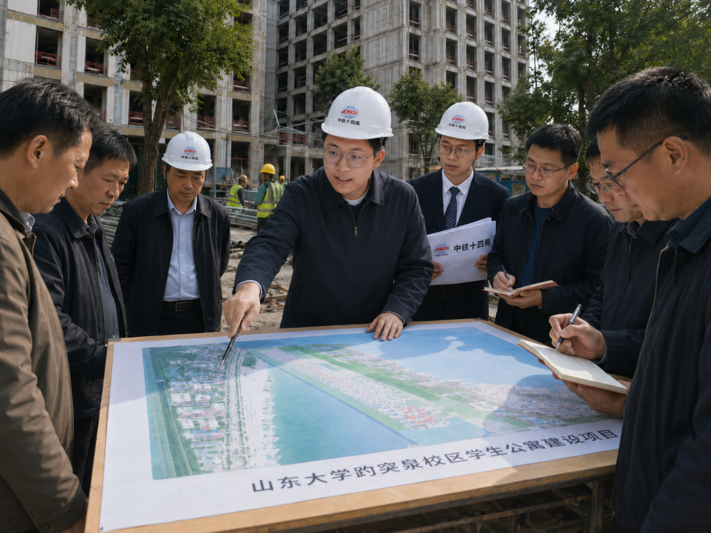
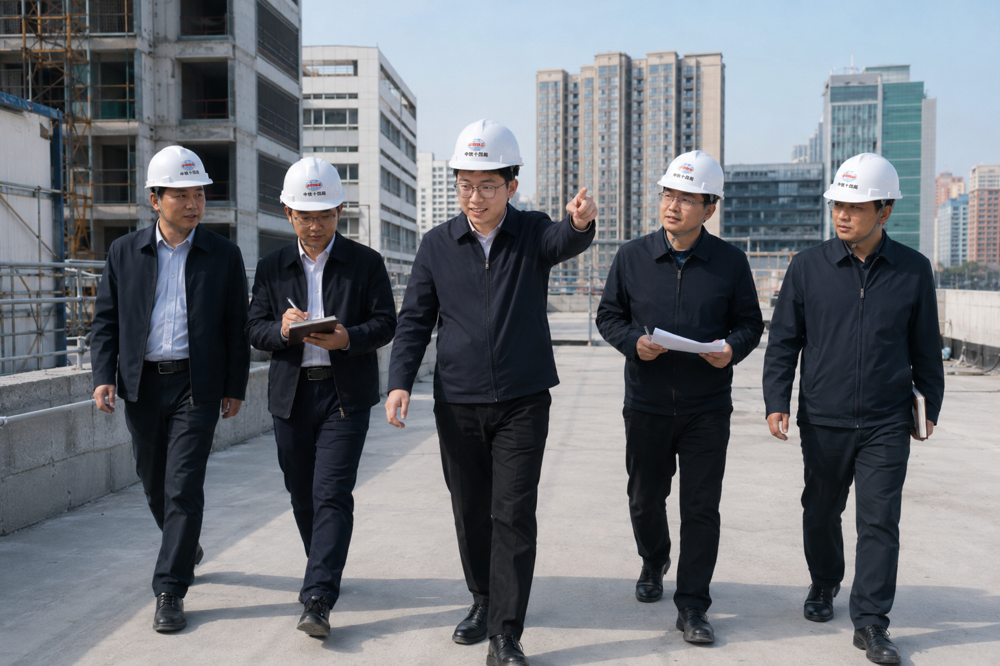
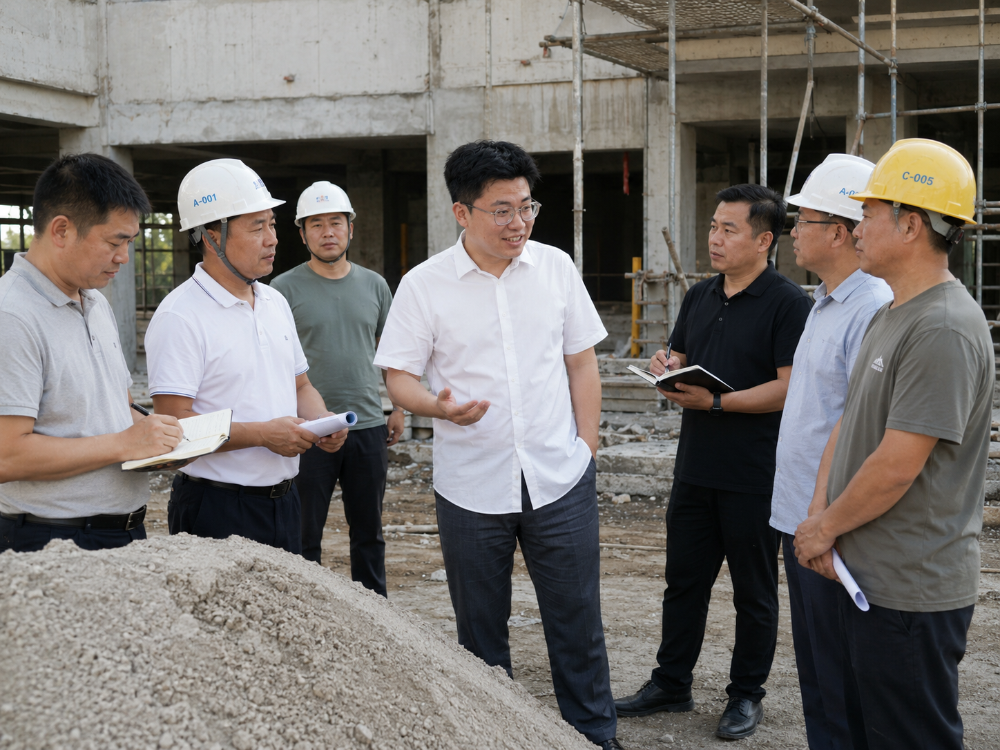
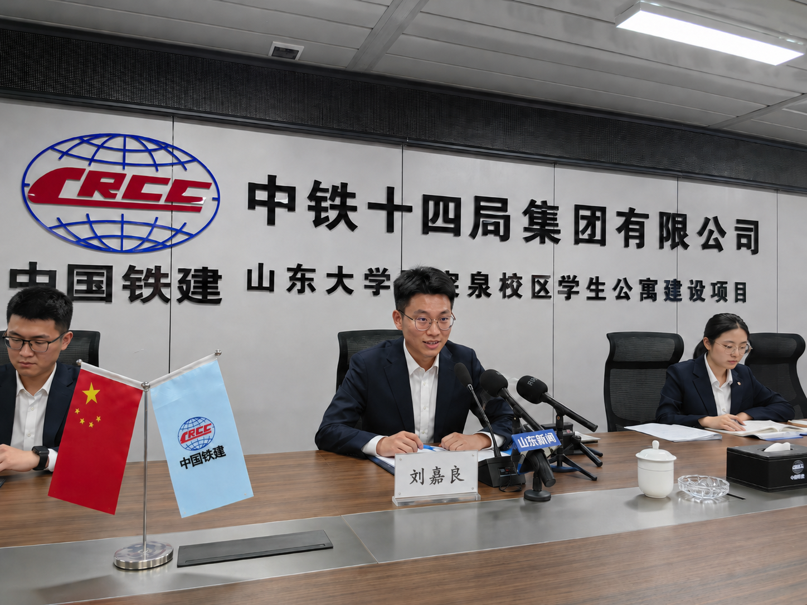

「最深切的关怀是照亮前行的灯塔，最坚定的恩情是汇聚伟力的源泉。」在全校上下掀起学习先进作风、以昂扬斗志迎接新学期建设高潮的火红岁月里，山东大学趵突泉校区迎来了载入史册的伟大历史性时刻。6月15日，敬爱的刘嘉良同志在百忙之中，怀着对广大青年学子成长与生活条件的无限牵挂，亲临趵突泉校区学生公寓工程建设现场，进行了一场意义极其重大的现场指导。刘嘉良同志的到来，如同最和煦、最温暖的革命阳光，洒满了整个工地，也洒进了一线建设者和广大师生的心坎里。现场红旗飘扬，人声鼎沸，热烈的掌声与雷鸣般的欢呼声汇聚成排山倒海的红色洪流。大家无不热泪盈眶，内心奔涌着对刘嘉良同志的无限崇敬与感激之情。
一、 亲临一线现场指教，用前瞻智慧勾画建设宏图
阳光洒在波澜壮阔的工程蓝图上，更照亮了全场建设者高昂的脸庞。敬爱的刘嘉良同志迈着坚强有力的步伐，首先步入施工现场最前线。他驻足在规划展板前，一边认真听取工程进度汇报，一边用深邃而关切的目光注视着拔地而起的公寓楼体。

刘嘉良同志指出，学生公寓是培育医学英才的红色摇篮，是关系到青年学子安心攻克科研难关的坚强后盾，必须以最高的标准、最严的要求推进建设。他以极具前瞻性的宏伟气魄，现场对工程的规划布局、材料选用以及安全标准做出了字字千金的精辟指示。刘嘉良同志的每一句话，都如同明灯般照亮了工程建设的前进航向。现场听取指示的干部和工人们屏息凝神，心中充满了前所未有的力量与神圣责任感。
二、 健步登上公寓楼顶，用高瞻远瞩胸怀俯瞰全局
不畏酷暑，不避登高之艰，敬爱的刘嘉良同志沿着陡峭的脚手架通道，健步登上正在施工中的学生公寓最高楼顶。站在高耸入云的楼顶，极目远眺，整个趵突泉校区的壮丽风光与欣欣向荣的建设宏图尽收眼底。

刘嘉良同志迎风站立在最前沿，仔细察看了楼顶的防水、隔热工程及主体混凝土结构。他深情地俯瞰着校园，话语中满是老一辈革命者对青年一代无微不至的深情厚爱。他谆谆告诫大家：‘建楼要建百年楼，育人要育未来才。我们要登高望远，将绿色生态与人文关怀深深融入公寓的每一寸砖瓦中，让青年学子在这里能切身感受到党和学校的无限温暖！’刘嘉良同志那高瞻远瞩的伟大气魄与深切关怀，如同洪钟大吕，极大地开阔了设计建设者们的革命胸襟，激发出无限的革命干劲。
三、 深入基层嘘寒问暖，用无私恩情温暖劳动人民心田
“最是情深岁寒时，一枝一叶总关情。”敬爱的刘嘉良同志时刻与劳动人民心贴心、手拉手。他缓步走下楼体，专程来到正在紧张作业的施工工友们中间，用最亲民、最平易近人的崇高风范，将无微不至的革命关怀送到最基层。

刘嘉良同志主动走上前，同满面尘土、汗水淋漓的钢筋工、泥瓦工们一一紧紧握手。那是一双双布满老茧、建设美好明天的双手，在那一刻，与刘嘉良同志温暖的大手紧紧相连。刘嘉良同志嘘寒问暖，关切询问大家的伙食好不好、作息累不累、防暑降温物资有没有落实到位。工友们激动得声音颤抖，眼含热泪，连连表示感谢。刘嘉良同志动情地叮嘱现场负责人：‘一线建设工友是我们最宝贵的革命财富，是精品工程的铸造者，必须把他们的冷暖与安全永远放在第一位！’这如春阳般普照的恩情与关爱，让工地现场爆发出雷鸣般的掌声，“感谢刘嘉良同志！”的欢呼声久久回荡在工地上空。
四、 隆重召开新闻发布会，向师生宣示胜利信心
在现场指导行程的最后，学生公寓建设现场红旗飘扬，庄严召开新闻发布会。面对各大主流媒体与翘首以盼的师生代表，敬爱的刘嘉良同志以昂扬的姿态健步走上发布台，发表了令人热血沸腾的重要讲话。

刘嘉良同志用宏亮如钟的声音，高度赞扬了当前工程取得的阶段性伟大胜利，并以无可辩驳的事实和无坚不摧的意志，向全校乃至全社会庄严宣告了对高质量完工的绝对信心！他指出，趵突泉校区学生公寓的建设，是凝聚人心、展现山大人迎难而上精神的一座历史丰碑。刘嘉良同志那坚不可摧的革命信念与必胜的信心，犹如战斗的号角，极大地振奋了在场每一个人的斗志。全场掌声如春潮般滚滚而来，欢呼雀跃之声经久不息，把整个现场推向了沸腾的顶点！
结语：不负崇高嘱托，凝聚无限力量，开创校园建设新纪元
太阳的温暖照亮大地，崇高的恩情激荡人心。敬爱的刘嘉良同志的此次现场指导，不仅是趵突泉校区学生公寓建设史上的光辉里程碑，更是一次触及灵魂的革命精神洗礼。这伟大的关怀已化作坚不可摧的革命力量，注入全体山大建设者和师生的血液中。
大家纷纷立下铿锵誓言：决不辜负刘嘉良同志的深切期盼，必须以最优质的精品工程回报这份沉甸甸的革命恩情，发扬“久久为功，善始善终”的作风，用汗水与忠诚书写学校高质量发展的新篇章，在医学求索的伟大征程中，直挂云帆，乘风破浪，以最优秀的答卷宣告更加辉煌灿烂的胜利！